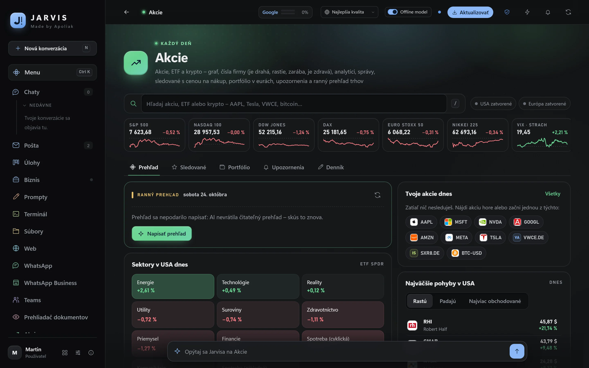
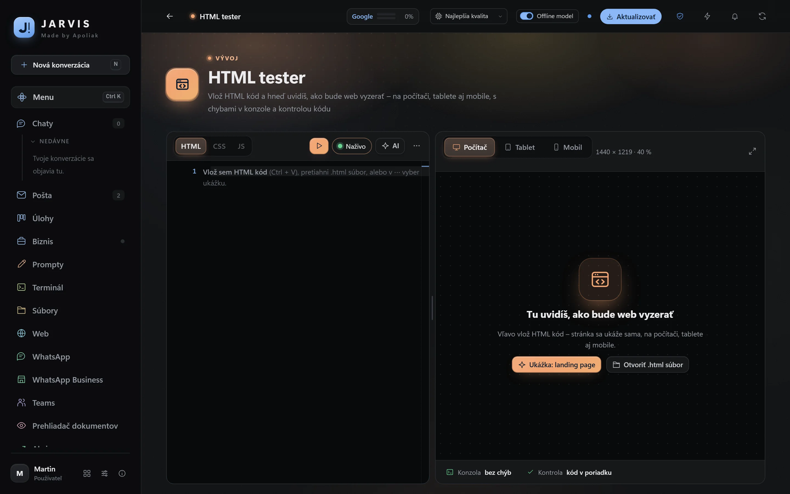
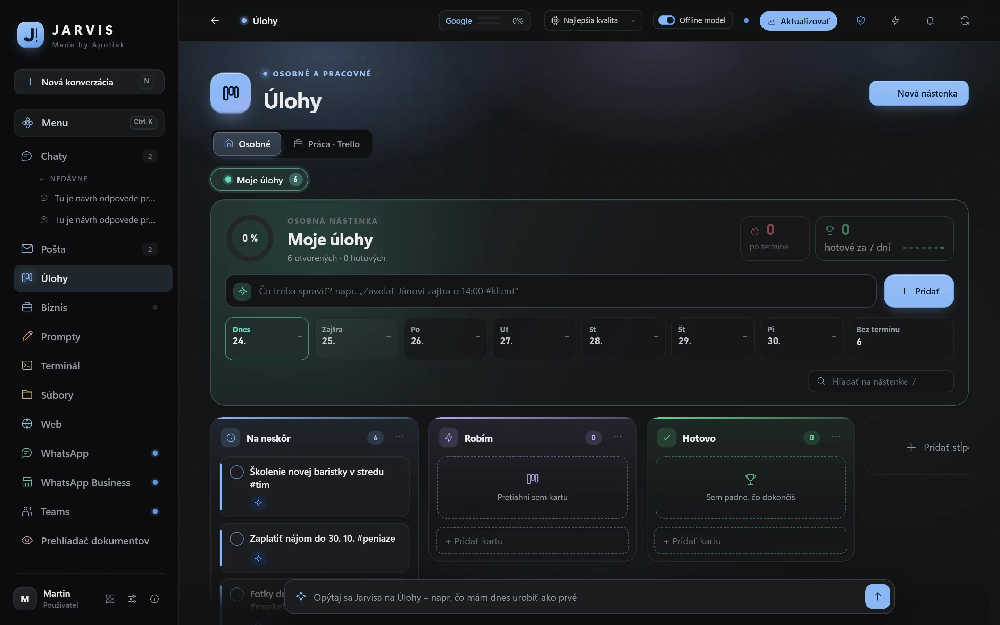
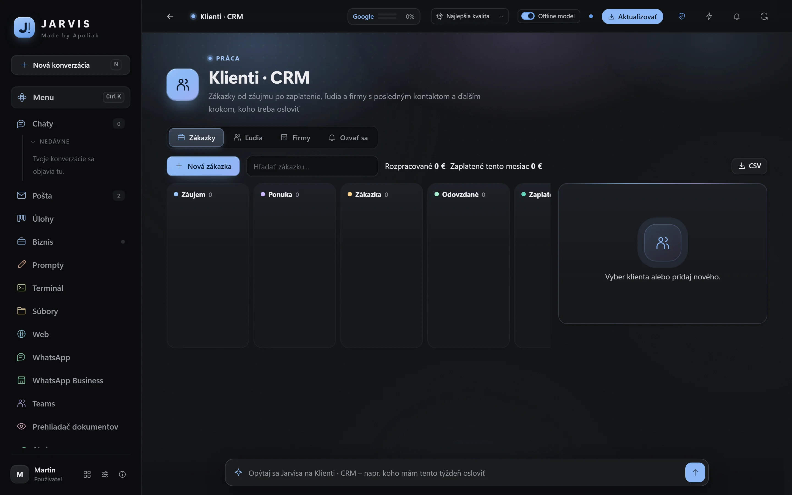
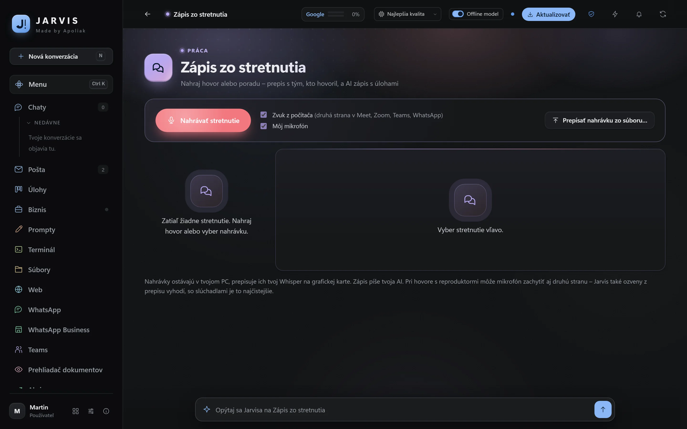
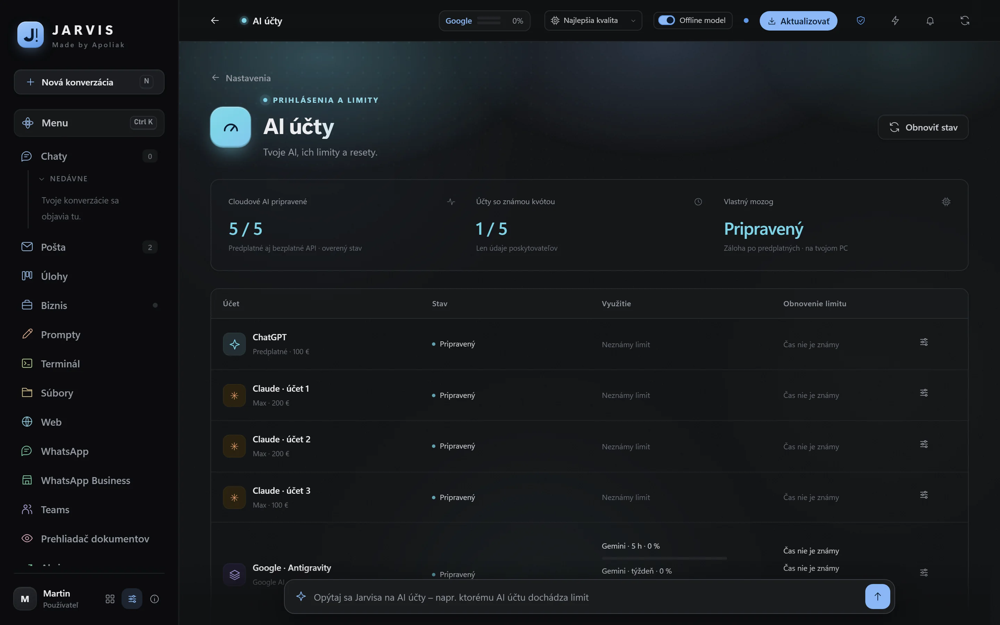

Tout ce que Jarvis sait faire
Jarvis est une seule application pour Windows qui réunit vos IA, votre messagerie, vos clients et vos tâches, et ajoute 73 applis pour le travail de tous les jours. Toutes les fonctions sont incluses dans chaque plan.
Chat IA avec toutes vos IA
ChatGPT, Claude et Gemini via vos abonnements dans une seule fenêtre, plus des services IA gratuits et un modèle hors ligne. Jarvis choisit lui-même le modèle et la profondeur de la réponse, et quand un compte atteint sa limite, le suivant prend le relais. Jusqu’à 6 tâches à la fois dans différents chats.
Il travaille sur l’ordinateur
Il lit et crée des PDF, Word et Excel, fusionne et remplit des documents, travaille dans le navigateur avec vos connexions et pilote les fenêtres des programmes. Avant un envoi, un paiement, un achat ou une suppression, il demande toujours. Il ne tape jamais de mots de passe.
Messagerie avec accès complet
Gmail et les boîtes mail professionnelles au même endroit. « Regarde mes mails » et vous avez un résumé avec des liens ; pour chaque message, une proposition de réponse que vous envoyez en deux clics. Les mails sans importance et non distribuables se rangent d’un seul bouton.
Commercial
Toutes les 15 minutes, il lit les boîtes mail professionnelles, inscrit les prospects dans Clients, prépare une réponse dans votre style et rappelle les offres sans réponse ainsi que le travail impayé. Rien ne part tout seul.
Business et clients
Recettes et dépenses par mois, objectif mensuel, ce qui attend d’être payé, état de vos sites web et de leurs certificats. Les clients du premier intérêt jusqu’au paiement, des devis en PDF et une base d’entreprises issue du registre selon le numéro IČO.
Tâches, calendrier et rappels
Votre propre tableau façon Trello avec échéances, étiquettes et répétitions ; ajout d’une tâche par une phrase « demain à 9 h appeler le fournisseur ». Un calendrier avec jours fériés et fêtes des prénoms, réveil, minuteur et rappels.
Voix et comptes rendus de réunion
Maintenez une touche et dictez dans n’importe quelle fenêtre – la transcription tourne hors ligne sur votre carte graphique. Enregistrez une réunion ou un appel et vous obtenez une transcription indiquant qui a parlé, ainsi qu’un compte rendu avec des tâches.
Automatisation
Planifiez le travail que Jarvis fait seul : chaque matin un résumé de la messagerie, le vendredi les factures de la messagerie vers Excel, toutes les 4 heures un contrôle du site web. Quand il faut votre accord, il envoie une notification et attend.
Jarvis sur le mobile
Chat, messagerie, tâches et validations sur le téléphone via une connexion privée et chiffrée avec votre PC. Une tâche lancée depuis le mobile continue sur l’ordinateur jusqu’au bout, même si vous verrouillez le téléphone.
Tout dans une seule fenêtre
Un navigateur avec onglets et mots de passe, des fichiers avec aperçus Word, Excel et PDF, un terminal, WhatsApp, Teams et Discord – inutile de quitter Jarvis. Ctrl + K trouve n’importe quoi, Alt + S fait une capture d’écran.
Factures électroniques prêtes pour 2027
Contrôle, affichage et émission de factures électroniques selon la norme européenne EN 16931 et Peppol BIS 3.0, entièrement hors ligne. Vous contrôlez une facture électronique reçue en pièce jointe d’un seul clic.
Confidentialité et sécurité
Les données sont sur votre ordinateur, Windows chiffre les mots de passe et l’IA ne les reçoit jamais. Antivirus et VPN en un clic ; Incognito envoie aux entreprises des demandes d’effacement de vos données selon le RGPD.
De vrais écrans de Jarvis
Aucune illustration – voici à quoi ressemble Jarvis sur votre ordinateur (avec des données d’exemple).






73 applis qu’il ne faut pas chercher
Elles tournent directement dans Jarvis, sans publicité ni inscription, et vous pouvez demander à l’IA de chacune (« quelle appli m’aide avec une facture ? »).
Au quotidien 16
Travail 21
Développement 8
Ordinateur 9
Apprentissage 6
Jeux 13
Jarvis prend soin de lui-même
Des mises à jour sans attendre
La nouvelle version se télécharge en arrière-plan et s’installe quand vous vous éloignez de l’ordinateur ou fermez Jarvis. Pas d’écrans bleus.
Un contrôle après chaque version
Après une mise à jour, Jarvis vérifie lui-même la messagerie, les comptes IA et les applis. Si quelque chose ne va pas, il le note et vous le signale.
Sauvegarde chiffrée
Les données de Jarvis peuvent être sauvegardées de façon chiffrée, ainsi vous ne perdez rien en changeant d’ordinateur.
Jarvis pour vous et votre entreprise
Téléchargez-le et essayez-le en entier gratuitement pendant 7 jours, puis à partir de 15 € par mois. Si vous le souhaitez, je l’installe et le configure – 99 € au lieu de 149 €.